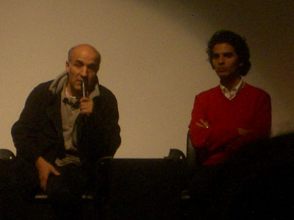

| < | > |
| you can't kill the sun | [2007-01-21 12:12] |
 we went to see Le Soleil assassiné - the story of pied noir poet Jean Sénac - who got eaten up by the march of Algerian history afterwards the director - Abdelkrim Bahloul - talked patiently of cultural repression - i felt ashamed to be so ignorant it was like the old days - watching the crumpled "Poet" - rushing to the radio studio - to broadcast "Poetry" - to goat boys - in the hills |
|